11_Gadget驱动程序框架#
参考资料：
Linux下USB gadget设备详解：https://www.docin.com/p-1852320293.html
Linux usb gadget框架概述：https://blog.csdn.net/daocaokafei/article/details/114114824
USB设备驱动程序-USB Gadget Driver(二)：https://blog.csdn.net/chenzhen1080/article/details/53742924
usb gadge驱动设计之我是zero：https://www.bbsmax.com/A/Ae5RvbwM5Q/
Linux-USB驱动笔记（四）–USB整体框架: https://qingmu.blog.csdn.net/article/details/119979199
USB gadget设备驱动解析: https://www.likecs.com/show-843861.html
调试软件：USB view 、bushound 、及一些硬件USB信号分析仪
可以用wireshark+usbmon捕捉usb协议数据包。
1. 怎样理解Gadget框架#
USB协议是主从结构：
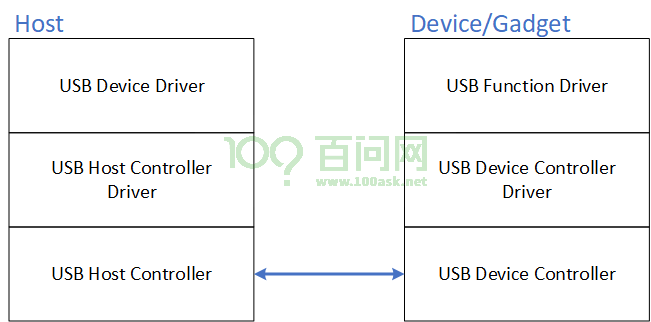
我们编写USB设备驱动程序时，主要是：
读取设备的各类描述符，比如endpoint描述符，得到端点号
使用底层USB Host Controller驱动程序提供的API函数，从endpoint上读写数据
那么要基于Gadget驱动框架模拟一个USB设备时，endpoint的数据传输能力是底层的USB Device Controller驱动提供的，我们要做的就是：
提供各类设备描述符
使用底层USB Device Controller驱动程序提供的API函数，从endpoint得到数据、反馈数据
Gadget的含义是”小器件”，在Linux的USB系统中，它表示”usb device”。Gadget驱动程序，就是用来模拟USB Device。对于真实的USB Device，它有两大要素：
怎么表示自己？
每个USB Device都有1个设备描述符
都1个或多个配置描述符
每个配置描述符里面有1个或多个接口描述符
每个接口描述符里面有0个多个端点描述符
怎么进行数据传输？
通过端点进行传输
有端点的操作函数
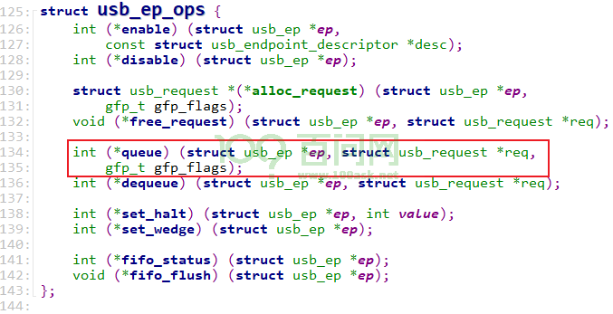
在学习过程中，记住这几个要点非常有帮助：
各类描述符的构造
USB Host获得Gadget各类描述符的过程
数据传输的流程
2. 从硬件软件角度理解Gadget框架#
USB传输的核心是endpoint，使用endpoint可以收发数据。在endpoint之上，就可以模拟USB串口、USB触碰屏、USB摄像头。基于这个角度，Gadget框架可以分为两层：
底层endpoint操作
上层模拟各类USB设备

2.1 底层硬件操作_UDC驱动#
对于底层endpoint的代码，需要从UDC驱动开始分析：
IMX6ULL的代码：
Linux-4.9.88\drivers\usb\chipidea\ci_hdrc_imx.cci_hdrc_imx_probe ci_hdrc_add_device pdev = platform_device_alloc("ci_hdrc", id); // Linux-4.9.88\drivers\usb\chipidea\core.c static struct platform_driver ci_hdrc_driver = { .probe = ci_hdrc_probe, .remove = ci_hdrc_remove, .driver = { .name = "ci_hdrc", .pm = &ci_pm_ops, }, }; ci_hdrc_probe ret = ci_hdrc_gadget_init(ci); udc_start
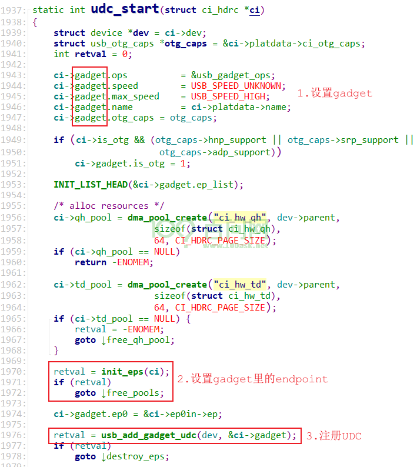
STM32MP157的代码：
Linux-5.4\drivers\usb\dwc2\platform.cdwc2_driver_probe retval = dwc2_gadget_init(hsotg);
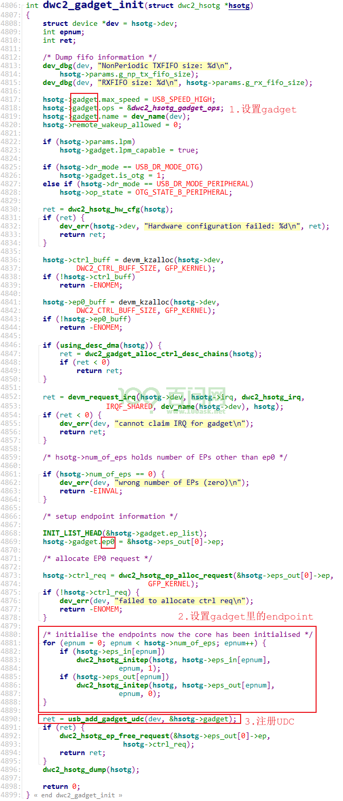
2.2 上层软件操作#
模拟各类USB设备时，软件怎么分层？以访问设备、获取描述符为例：
Host要分配地址、把地址发送给设备：不管要模拟什么设备，Gadget都必须接收地址，这部分由usb_gadget(硬件相关的驱动程序)实现
Host要读取各类描述符，这些描述符是由上层的驱动程序提供的
怎么把上层的描述符通过底层的usb_gadget传回给Host？还需要一个中间层。Host获取描述符时，方法是固定、通用的，这些方法可以由内核统一提供，这就是：usb_gadget_driver。
所以，从获取描述符的角度看看，上层软件至少分为2层：
usb_gadget_driver：实现一些通用的USB访问方法，比如Host访问描述符时，由usb_gadget_driver提供
在这上面提供各类描述符，实际上，描述符的提供还可以分为两层：
设备描述符、配置描述符：由程序员决定，由usb_composite_driver提供
接口描述符、endpoint描述符：由内核事先实现的、常用的function driver提供
软件层次可以进一步细化，如下图：
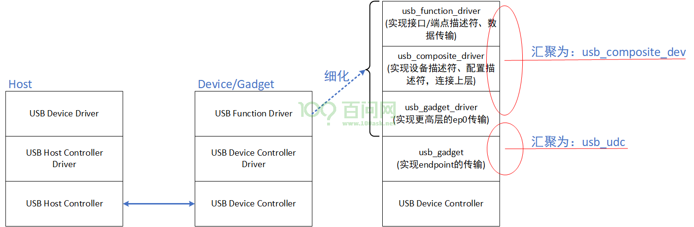
这涉及2个结构体：
usb_composite_dev：它里面汇集有各类描述符、有一个usb_funciton链表(实现数据传输)
struct usb_composite_dev { struct usb_gadget *gadget; struct usb_request *req; struct usb_request *os_desc_req; struct usb_configuration *config; /* OS String is a custom (yet popular) extension to the USB standard. */ u8 qw_sign[OS_STRING_QW_SIGN_LEN]; u8 b_vendor_code; struct usb_configuration *os_desc_config; unsigned int use_os_string:1; /* private: */ /* internals */ unsigned int suspended:1; struct usb_device_descriptor desc; struct list_head configs; struct list_head gstrings; struct usb_composite_driver *driver; u8 next_string_id; char *def_manufacturer; /* the gadget driver won't enable the data pullup * while the deactivation count is nonzero. */ unsigned deactivations; /* the composite driver won't complete the control transfer's * data/status stages till delayed_status is zero. */ int delayed_status; /* protects deactivations and delayed_status counts*/ spinlock_t lock; /* public: */ unsigned int setup_pending:1; unsigned int os_desc_pending:1; };
usb_udc：UDC的本意是”usb device controller”，usb_udc结构体里面有usb_gadget(表示UDC本身)、usb_gadget_driver()
struct usb_udc { struct usb_gadget_driver *driver; struct usb_gadget *gadget; struct device dev; struct list_head list; bool vbus; };
3. 从构造描述符的角度理解Gadget框架#
假设你要模拟一个USB设备，
这个USB设备含有厂家信息：它记录在设备描述符里，所以设备描述符应该由你提供
这个芯片可能有多种配置，这也是由你决定，所以配置描述符应该由你提供
某个配置下多个接口，接口就是功能，Linux内核里事先提供了很多功能的驱动程序，所以：接口描述符是内核提供的
某个接口下需要什么端点，也是内核里各类功能的驱动程序提供的
以zero.c为例：
配置1：loopback，Host写数据给它，就可以读出原样的数据
配置2：sourcesink，Host写数据给它(它只是记录下数据)，Host还可以读数据(读到的都是0)
从下到上涉及这些文件：
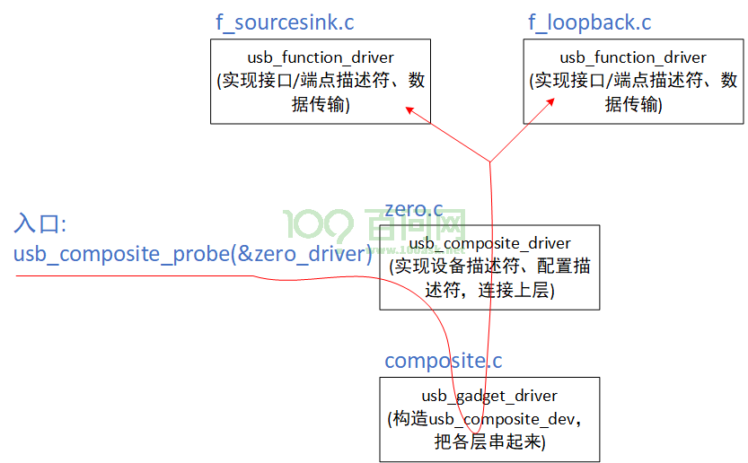
阅读源码时，入口函数是usb_composite_probe(&zero_driver)：
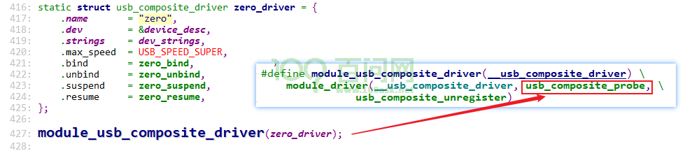
函数调用过程中主要的函数如下，重点关注”xxx_bind”函数，可以认为bind就是初始化的意思：
usb_composite_probe
composite_bind
zero_bind
sourcesink_bind/loopback_bind
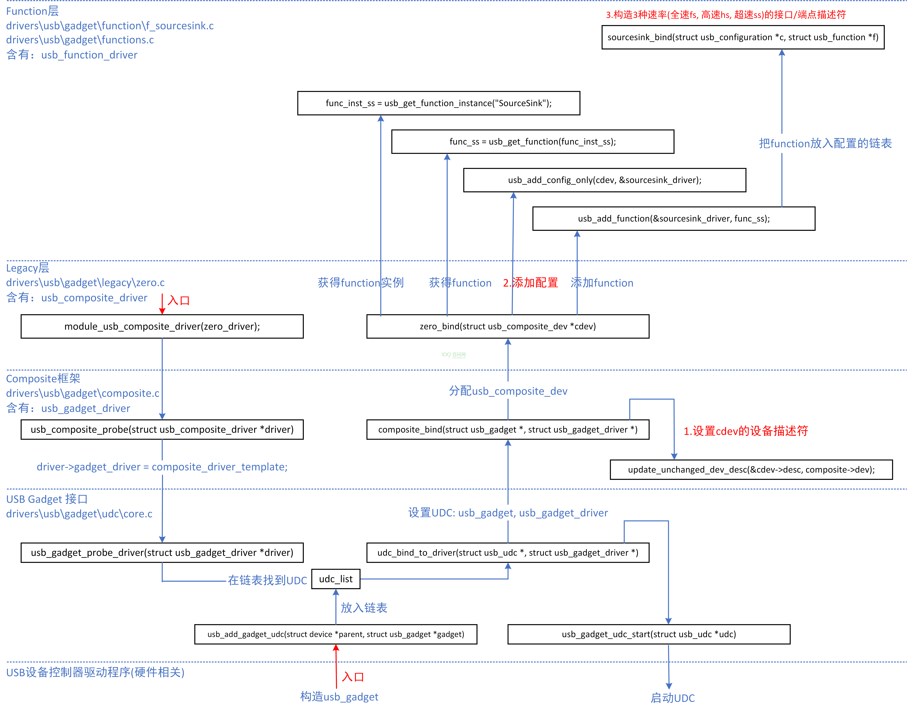
深入解读描述符的构造过程，可以得到下面的图：
构造出一个usb_composite_dev结构体
它把各层串联起来，里面构造有设备描述符、配置描述符、接口描述符、端点描述符

4. 从获取描述符的角度理解Gadget框架#
安装好gadget驱动程序后(比如modprobe g_zero), 它只是构造好了各类描述符。在设备的枚举过程会读取描述符，枚举过程要做的事情可以参考《05_USB描述符.md》的《4. 设备枚举过程示例》。
使用OTG线连接电脑和开发板时，电脑软件会执行如下操作：
使用控制传输，读取设备信息(设备描述符)：第一次读取时，它只需要得到8字节数据，因为第8个数据表示端点0能传输的最大数据长度。
Host分配地址给设备，然后把新地址发给设备
使用新地址，重新读取设备描述符，设备描述符长度是18
读取配置描述符：它传入的长度是255，想一次性把当前配置描述符、它下面的接口描述符、端点描述符全部读出来
读取字符描述符
上述过程里，设备方都是接收到Host发给endpoint 0的数据，然后做出回应。不同的Gadget设备，在返回描述符给主机时，这些操作都是一样的，只是回应的数据不同而已。源码分析的起点都是某个中断函数：
IMX6ULL：ci_irq(drivers/usb/chipidea/core.c)
STM32MP157: dwc2_hsotg_irq(drivers/usb/dwc2/gadget.c)
4.1 IMX6ULL的核心函数#
IMX6ULL芯片中USB控制器型号是chipidea，在Linux-4.9.88\drivers\usb\chipidea\core.c中注册了中断函数：
ci_hdrc_probe
ret = devm_request_irq(dev, ci->irq, ci_irq, IRQF_SHARED,
ci->platdata->name, ci);
发生中断后，对于endpoint 0的数据处理流程如下：
// Linux-4.9.88\drivers\usb\chipidea\core.c
ci_irq
/* Handle device/host interrupt */
if (ci->role != CI_ROLE_END)
ret = ci_role(ci)->irq(ci); // udc_irq
// Linux-4.9.88\drivers\usb\chipidea\udc.c
udc_irq
if (USBi_UI & intr)
// Linux-4.9.88\drivers\usb\chipidea\udc.c
isr_tr_complete_handler(ci);
/* Only handle setup packet below */
if (i == 0 &&
hw_test_and_clear(ci, OP_ENDPTSETUPSTAT, BIT(0)))
// Linux-4.9.88\drivers\usb\chipidea\udc.c
isr_setup_packet_handler(ci);
函数isr_setup_packet_handler就是处理endpoint 0接收到的控制传输的关键。
4.2 STM32MP157的核心函数#
STM32MP157芯片中USB控制器型号是dwc2，在Linux-5.4\drivers\usb\dwc2\gadget.c中注册了中断函数：
dwc2_gadget_init
ret = devm_request_irq(hsotg->dev, hsotg->irq, dwc2_hsotg_irq,
IRQF_SHARED, dev_name(hsotg->dev), hsotg);
发生中断后，函数dwc2_hsotg_irq被调用，它处理endpoint中断有两种方法：
使用DMA时：调用
dwc2_hsotg_epint来处理不使用DMA时：调用
dwc2_hsotg_handle_rx来处理
以dwc2_hsotg_epint为例进行分析，对于endpoint 0的数据处理流程如下：
// Linux-5.4\drivers\usb\dwc2\gadget.c
dwc2_hsotg_irq
// 处理endpoint中断
for (ep = 0; ep < hsotg->num_of_eps && daint_out;
ep++, daint_out >>= 1) {
if (daint_out & 1)
dwc2_hsotg_epint(hsotg, ep, 0);
}
for (ep = 0; ep < hsotg->num_of_eps && daint_in;
ep++, daint_in >>= 1) {
if (daint_in & 1)
dwc2_hsotg_epint(hsotg, ep, 1);
}
函数dwc2_hsotg_epint中，对于endpoint 0的处理如下：
// Linux-5.4\drivers\usb\dwc2\gadget.c
dwc2_hsotg_epint
if (idx == 0 && !hs_ep->req)
dwc2_hsotg_enqueue_setup(hsotg);
函数dwc2_hsotg_enqueue_setup被调用时，Gadget设备已经收到了SETUP令牌包，但是还没收到DATA0令牌包。dwc2_hsotg_enqueue_setup的作用是，设置、启动一个request，核心在于设置了request的complete函数(当SETTUP事务完成后这个函数被调用)：
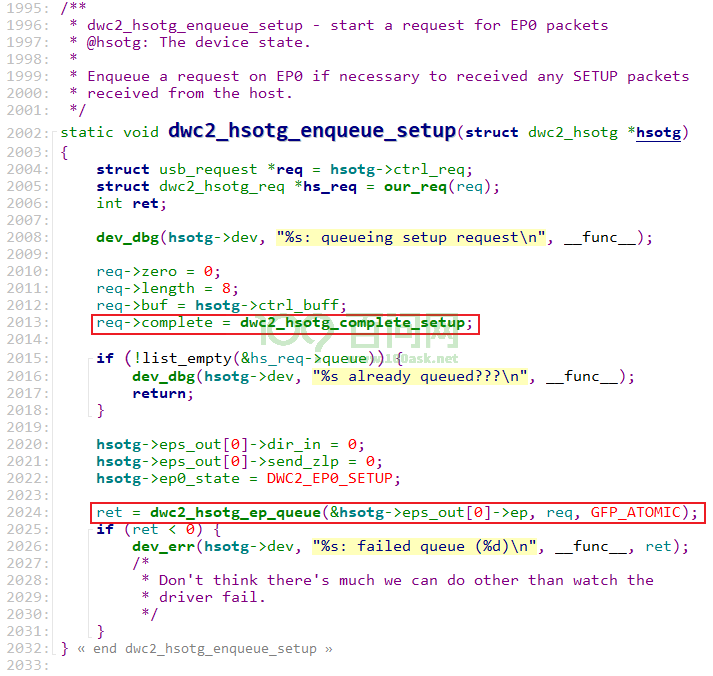
当控制传输的”setup事务”完成时，函数dwc2_hsotg_complete_setup被调用。
4.3 如何处理控制传输#
无论是IMX6ULL的函数isr_setup_packet_handler，还是STM32M157的函数dwc2_hsotg_complete_setup，它们都是在Gadget设备收到”SETUP事务”后才被调用。接收完”SETUP事务”后，就可以从里面知道这个控制传输想做什么(req.bRequest是什么)，然后就可以处理它了。
怎么处理呢？可以分为3层：
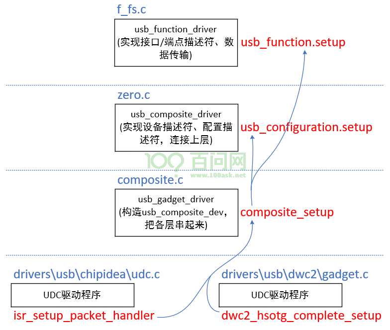
UDC驱动程序：类似”设置地址”的控制传输，在底层的UDC驱动程序里就可以处理，
这类请求有：
USB_REQ_SET_ADDRESS USB_REQ_SET_FEATURE // 有一些请求可能需要上报改gadget driver USB_REQ_CLEAR_FEATURE // 有一些请求可能需要上报改gadget driver USB_REQ_GET_STATUS // 有一些请求可能需要上报改gadget driver
驱动程序位置
IMX6ULL: Linux-4.9.88\drivers\usb\chipidea\udc.c, 函数isr_setup_packet_handler STM32MP157: Linux-5.4\drivers\usb\dwc2\gadget.c, 函数dwc2_hsotg_complete_setup
gadget driver：涉及描述符的操作
这类请求有：
USB_REQ_GET_DESCRIPTOR USB_REQ_SET_CONFIGURATION USB_REQ_GET_CONFIGURATION USB_REQ_SET_INTERFACE USB_REQ_GET_INTERFACE USB_REQ_GET_STATUS // 底层UDC驱动无法处理的话, gadget driver来处理 USB_REQ_CLEAR_FEATURE // 底层UDC驱动无法处理的话, gadget driver来处理 USB_REQ_SET_FEATURE // 底层UDC驱动无法处理的话, gadget driver来处理
驱动程序位置
文件：drivers\usb\gadget\composite.c 函数：composite_setup
usb_configuration或usb_function的处理：这是二选一的。大部分设备使用控制传输实现标准的USB请求，但是也可以用控制传输来进行实现相关的请求，对于这些非标准的请求，就需要上层驱动来处理。
5. 从数据传输的角度理解Gadget框架#
5.1 使用流程#
在USB协议中，永远是Host主动发起传输。作为一个Gadget驱动程序，它永远都是这样：
想接收数据：
先构造好usb_request：分配buffer、设置回调函数
把usb_request放入队列
UDC和Host完成USB传输，在usb_request中填充数据，并触发中断调用usb_request的回调函数
想发送数据：
先构造好usb_request：分配buffer、在buffer里填充数据、设置回调函数
把usb_request放入队列
UDC和Host完成USB传输，把usb_request的数据发给Host，并触发中断调用usb_request的回调函数
5.2 endpoint是核心#
USB传输的对象是endpoint，使用流程如下：
功能驱动里，通过endpoint描述符表明需要怎样的endpoint，比如（注意：bEndpointAddress只是表明方向，里面还没有地址，drivers\usb\gadget\function\f_loopback.c）：
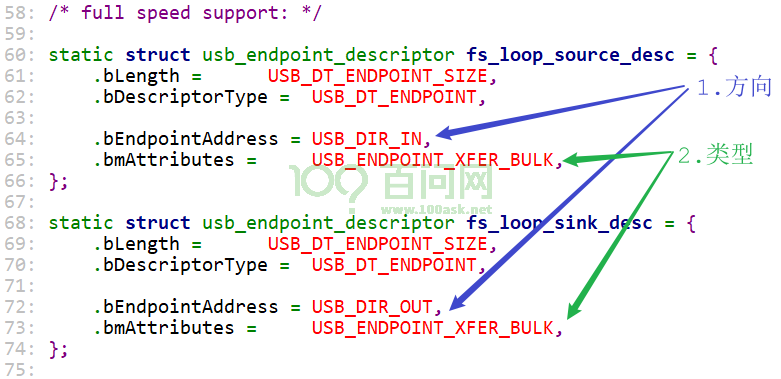
功能驱动里，它的bind函数根据endpoint描述符向底层申请分配endpoint，比如：
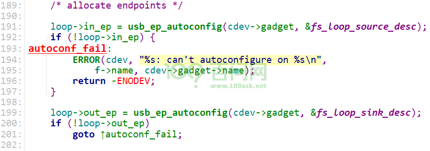
功能驱动里，使能endpoint，比如：
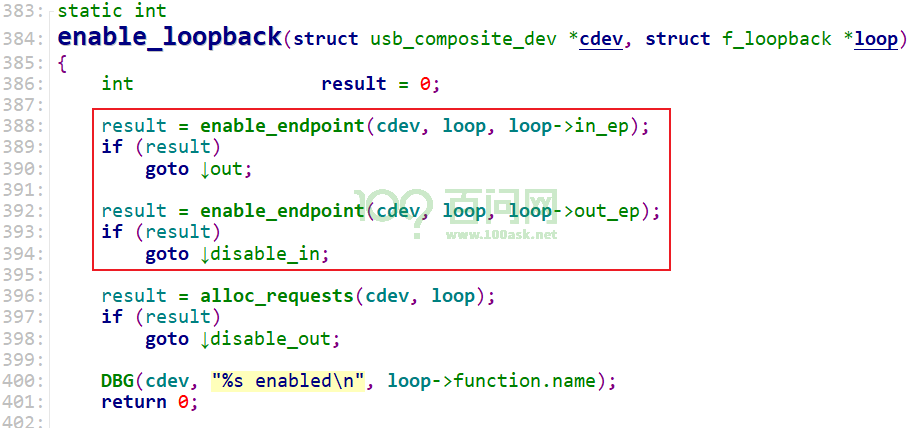
功能驱动里，给endpoint分配buffer、设置usb_request、提交usb_request，比如：
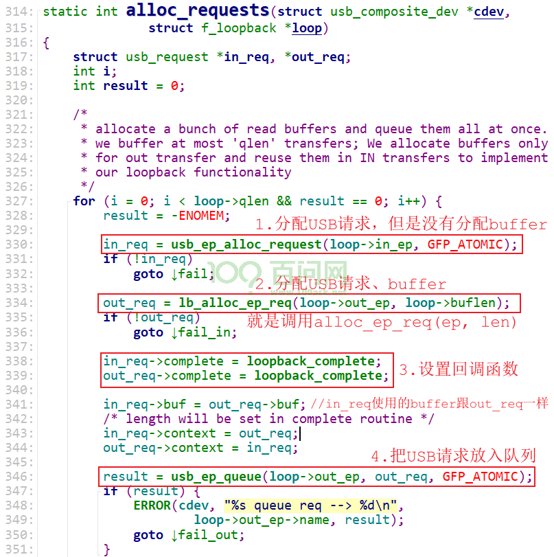
5.3 回调函数#
功能驱动里构造的usb_request，可以是接收Host发来的数据，也可以是向Host发送数据。当传输完成，usb_request的回调函数被调用。
在回调函数里，可以再次提交usb_request。
怎么调用到回调函数？源头是UDC的中断函数。
5.3.1 IMX6ULL#
调用关系如下：
// Linux-4.9.88\drivers\usb\chipidea\core.c
ci_irq
/* Handle device/host interrupt */
if (ci->role != CI_ROLE_END)
ret = ci_role(ci)->irq(ci); // udc_irq
udc_irq
if (USBi_UI & intr)
isr_tr_complete_handler(ci);
err = isr_tr_complete_low(hwep);
usb_gadget_giveback_request(&hweptemp->ep, &hwreq->req);
req->complete(ep, req);
5.3.2 STM32MP157#
调用关系如下：
// Linux-5.4\drivers\usb\dwc2\gadget.c
dwc2_hsotg_irq
// 处理endpoint中断
for (ep = 0; ep < hsotg->num_of_eps && daint_out;
ep++, daint_out >>= 1) {
if (daint_out & 1)
dwc2_hsotg_epint(hsotg, ep, 0);
dwc2_hsotg_handle_outdone(hsotg, idx);
dwc2_hsotg_complete_request(hsotg, hs_ep, hs_req, result);
usb_gadget_giveback_request(&hs_ep->ep, &hs_req->req);
req->complete(ep, req);
}
for (ep = 0; ep < hsotg->num_of_eps && daint_in;
ep++, daint_in >>= 1) {
if (daint_in & 1)
dwc2_hsotg_epint(hsotg, ep, 1);
dwc2_hsotg_complete_in(hsotg, hs_ep);
dwc2_hsotg_complete_request(hsotg, hs_ep, hs_req, 0);
usb_gadget_giveback_request(&hs_ep->ep, &hs_req->req);
req->complete(ep, req);
}
5.4 f_loopback分析#
loopback就是回环，Host发数据给Gadget，然后再读Gadget就可以得到原样的数据。
5.4.1 Gadget接收数据#
Host选择某个配置时，默认会选择这个配置下那些接口的第0个设置(altsetting)；
当Host发来USB_REQ_SET_INTERFACE请求时，可以选择指定的设置。
所为，我们从f_loopback.c的函数loopback_set_alt开始分析。
调用关系为：
loopback_set_alt
enable_loopback
result = enable_endpoint(cdev, loop, loop->in_ep);
result = enable_endpoint(cdev, loop, loop->out_ep);
result = alloc_requests(cdev, loop);
如上图所示，先提交的是out_req，它在等待Host发来数据。
假设断点loop->out_ep的out_req获得了数据，它的回调函数loopback_complete被调用，如下：
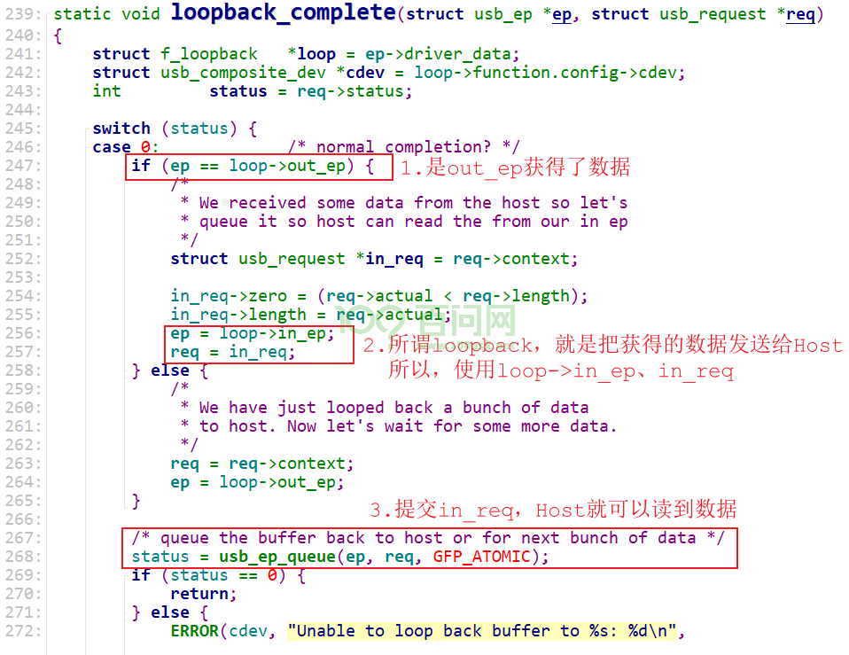
5.4.2 Gadget回环数据#
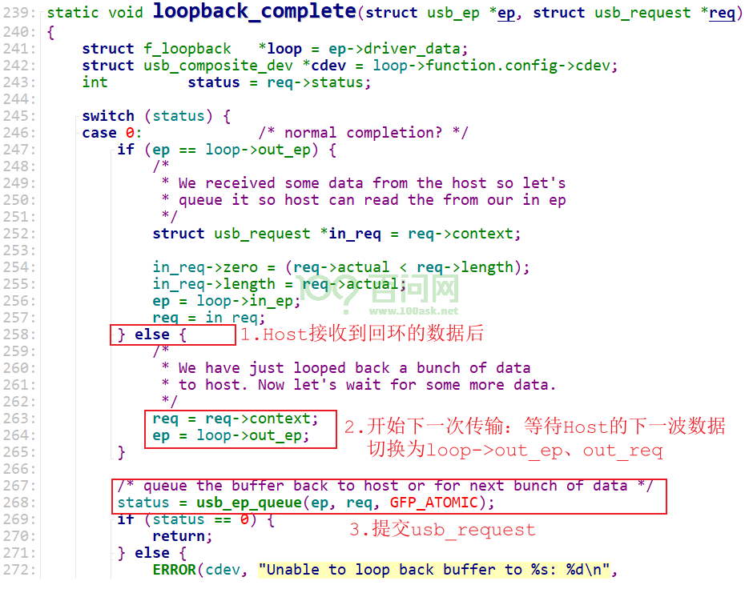
5.5 f_sourcesink分析#
前面的f_loopback也实现了两个方向的数据传输：Host到Gadget、Gadget到Host，但是它们之间是有依赖关系的，Host必须先发送数据再读数据。
f_sourcesink.c也实现了两个方向的数据传输：Host到Gadget、Gadget到Host，它们是独立的。
Host读Gadget：驱动程序里构造好数据，Host可以读到，Gadget作为源(就是source)
Host写Gadget：驱动程序里得到Host发来的数据，Gadget作为目的(就是sink)
5.5.1 Host写Gadget#
Host选择某个配置时，默认会选择这个配置下那些接口的第0个设置(altsetting)；
当Host发来USB_REQ_SET_INTERFACE请求时，可以选择指定的设置。
所为，我们从f_sourcesink.c的函数sourcesink_set_alt开始分析。
sourcesink_set_alt
enable_source_sink(cdev, ss, alt);
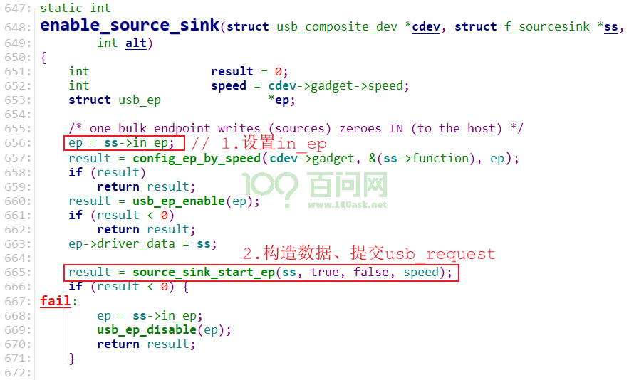
作为”source”，函数source_sink_start_ep会构造数据、提交usb_request：
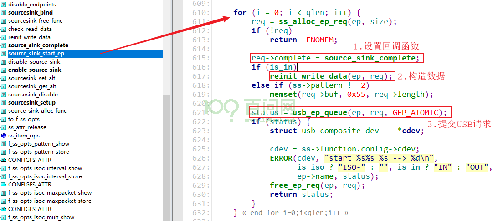
当Host读取到数据后，usb_request的回调函数被调用，它只是再次提交USB请求，给Host继续提供跟上次一样的数据：
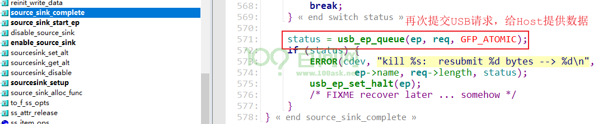
5.5.2 Host读Gadget#
仍然从f_sourcesink.c的函数sourcesink_set_alt开始分析。
sourcesink_set_alt
enable_source_sink(cdev, ss, alt);
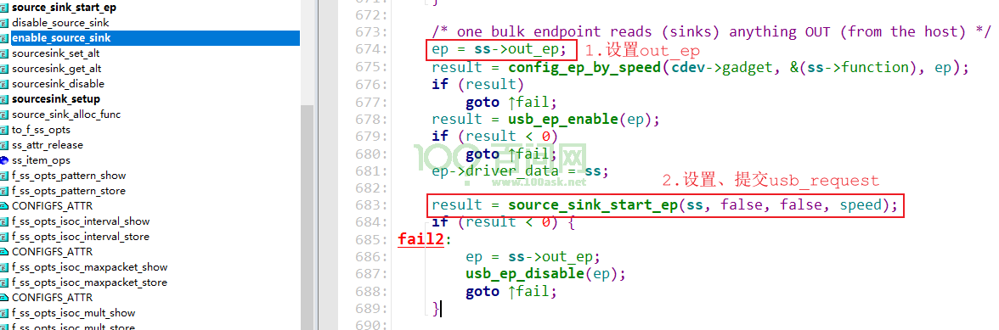
作为”sink”，函数source_sink_start_ep会故意把数据设置为0x55（这是为了调试，当读到数据时可以看到0x55被覆盖）、提交usb_request：
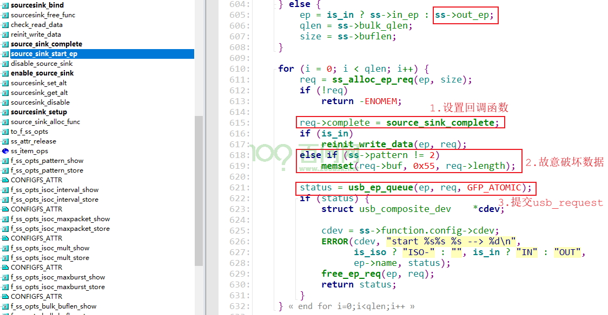
当Host发来数据，usb_request的回调函数被调用，它检查收到的数据，再次提交usb_request：
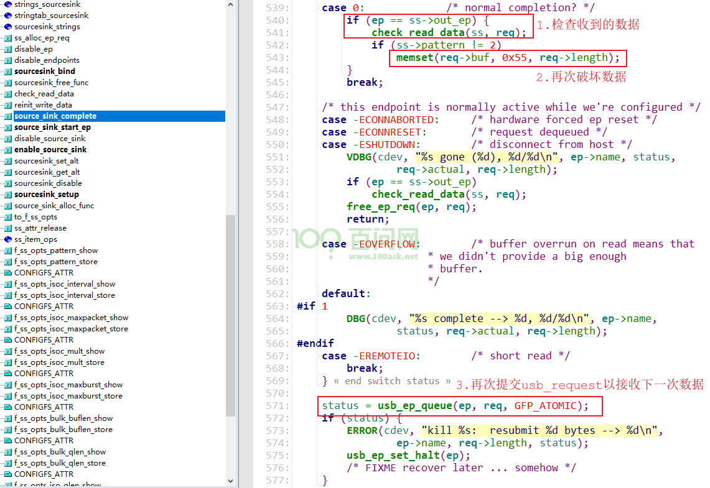